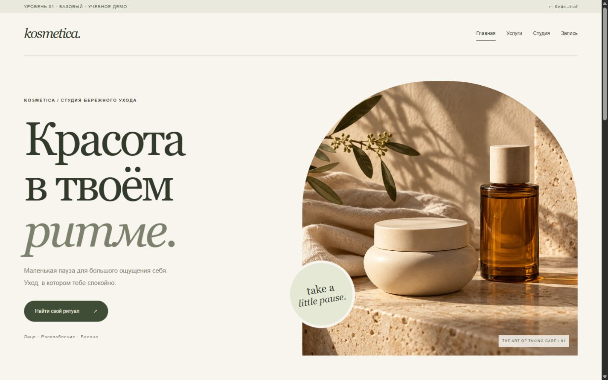
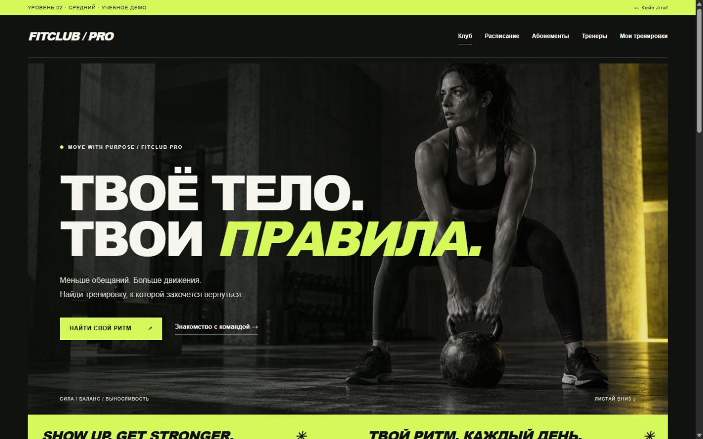
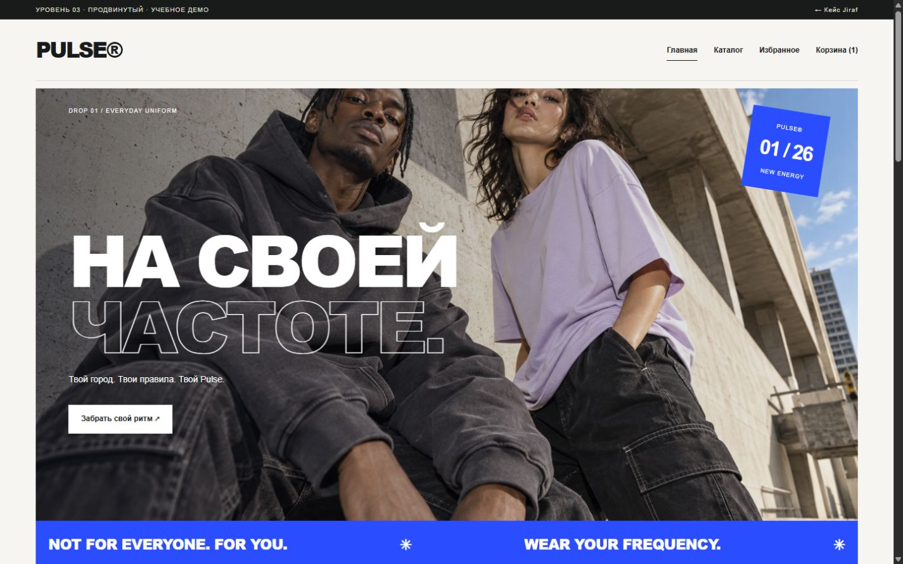
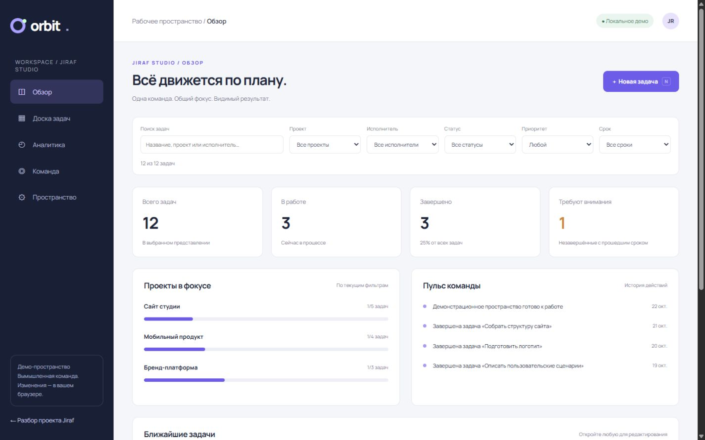

01 / 0401 · Базовый4 страницы
Kosmetica
Структура сайта, адаптивная вёрстка и форма записи.
01 Веб-разработчик / Москва
Помогаю перенести рабочие процессы в веб: от сайта с онлайн-записью до каталога товаров и системы управления.
Смотреть02 Мои проекты
Интерактивные демо
и решения
Четыре учебных проекта с разной сложностью. Каждый можно открыть и проверить в работе.

01 / 04Структура сайта, адаптивная вёрстка и форма записи.

02 / 04Фильтры расписания и личный план между страницами.

03 / 04Каталог, размеры, корзина, промокод и оформление.

04 / 04Канбан, модель данных, аналитика и импорт пространства.
03 Немного обо мне
Less noise.
More meaning.
Я верю, что хороший дизайн — это не украшение, а ясный ответ на важный вопрос.
Занимаюсь веб-разработкой и преподаванием. Соединяю интерфейс, серверную логику и базы данных в понятные инструменты для пользователей.
Что я знаю
🎓 Преподавательская деятельность